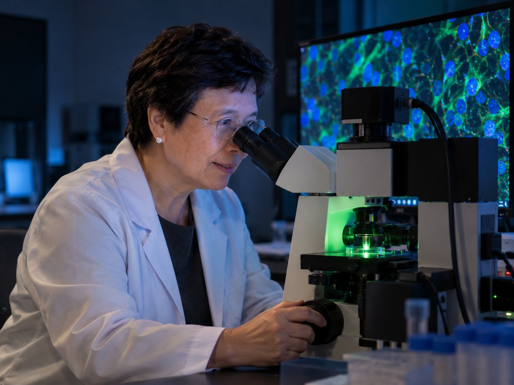
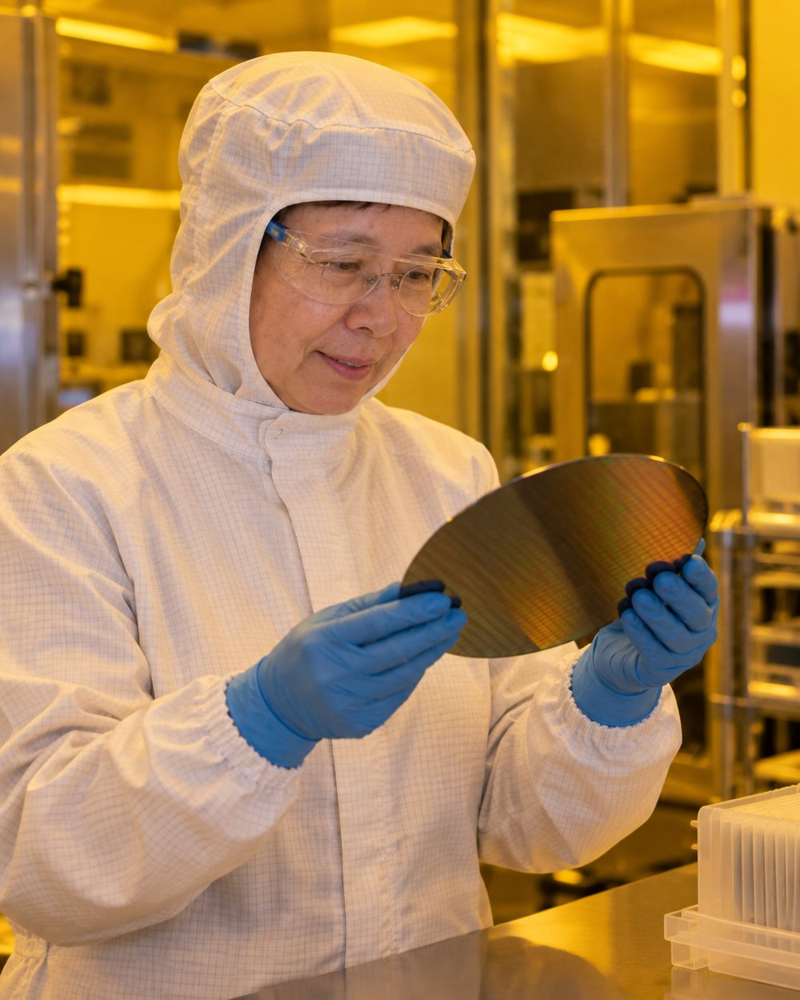
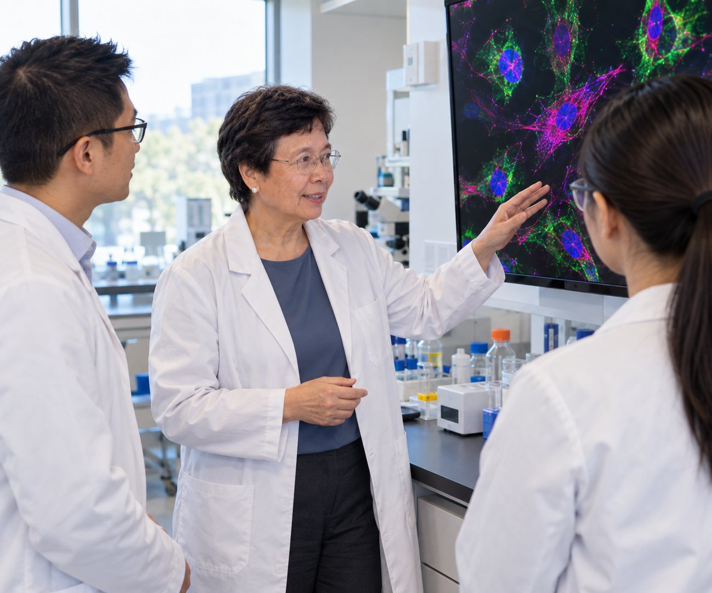

Potomac, Maryland
Founder, president and chief executive officer of Creatv MicroTech since 1996. Four degrees from MIT, a career that began in accelerator physics, and a blood test built around the cells everyone else was throwing away.
See the workIn 2010 her company began research on a blood test for cancer. The technology it developed collects circulating tumor cells from a patient's blood. It also caught something the field had been discarding.

The technology developed under her leadership in 2010 was aimed at collecting circulating tumor cells, or CTCs, from the blood of cancer patients. It worked.
The same method also collected large tumor associated giant cells that the field had previously ignored. Creatv calls them Cancer Associated Macrophage-Like cells, or CAMLs.
They were found in thousands of cancer patient samples across many cancer types, and not in healthy controls. That contrast is what turns a curiosity into a signal a clinician can use.
Stated by Creatv Bio, 31 July 2024, announcing that the CAML biomarker had been included in a pivotal Phase 3 trial in metastatic breast cancer.
1996
2000
2010
4
57
163
Patent and publication counts are as stated by Creatv MicroTech. They move as work is filed and published.
She did not start in oncology. She started in radiation and accelerator physics at a Navy laboratory, and arrived at cancer diagnostics by way of microfabrication. She attributes both the academic and the professional half of that to a logical approach to problem solving.
Creatv Bio, Division of Creatv MicroTech, Inc.
National Institute of Standards and Technology
U.S. Naval Research Laboratory
Jaycor Inc., and the Johns Hopkins University Applied Physics Laboratory
Education. Doctor of Science, Master of Science and Bachelor of Science, together with an electrical engineer degree, all from the Department of Electrical Engineering and Computer Science at the Massachusetts Institute of Technology.
Founded in 1996 on microfabrication. Re-incorporated in 2000 so the same precision manufacturing could be pointed at biological problems, starting with detecting E. coli in food and water. In 2010 it turned to cancer.
UV-LIGA microfabrication, custom copper and gold electroplating, and X-ray mask production.
The cancer diagnostics division. CTC and CAML liquid biopsy research, assay development, and the work she presents at conferences and writes up for publication.
Diagnostic blood testing delivered through a CLIA-certified laboratory.


The use of biomarkers like CAMLs holds great promise in helping clinicians determine whether a patient is responding to a specific therapy in a timely manner.
Cha-Mei Tang, ScD · 31 July 2024
Announcing that the CAML biomarker had been included in a pivotal Phase 3 trial of a metastatic breast cancer therapy, with blood samples analysed for circulating tumor cells, CAML subtyping and PD-L1 upregulation.
Every picture of Dr. Tang on this page is an AI-generated illustration, produced with her approval from a reference photograph. They are not photographs of real events, experiments, patients or samples.
Most outstanding woman scientist in the Federal Government, from Women in Science and Engineering, Inc.
From R&D Magazine.
Listed by Micro Nano Newsletter.
Montgomery County, Maryland. Awarded to Creatv MicroTech, not to an individual.
American Association for Cancer Research · American Society of Clinical Oncology · American Physical Society · IEEE
Enquiries about the diagnostics work, the microfabrication services, speaking or collaboration go to the company office in Potomac.
Creatv MicroTech, Inc.
11609 Lake Potomac Drive
Potomac, Maryland 20854
{kind=link}
{kind=link}
{kind=link}
{kind=link}
{kind=link}
{kind=link}